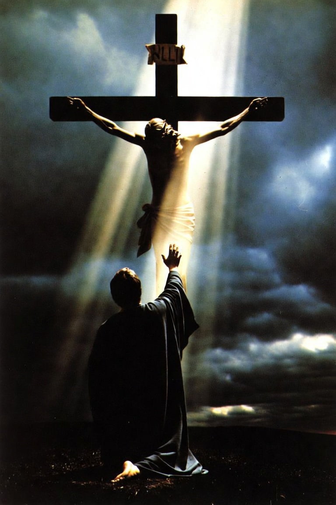
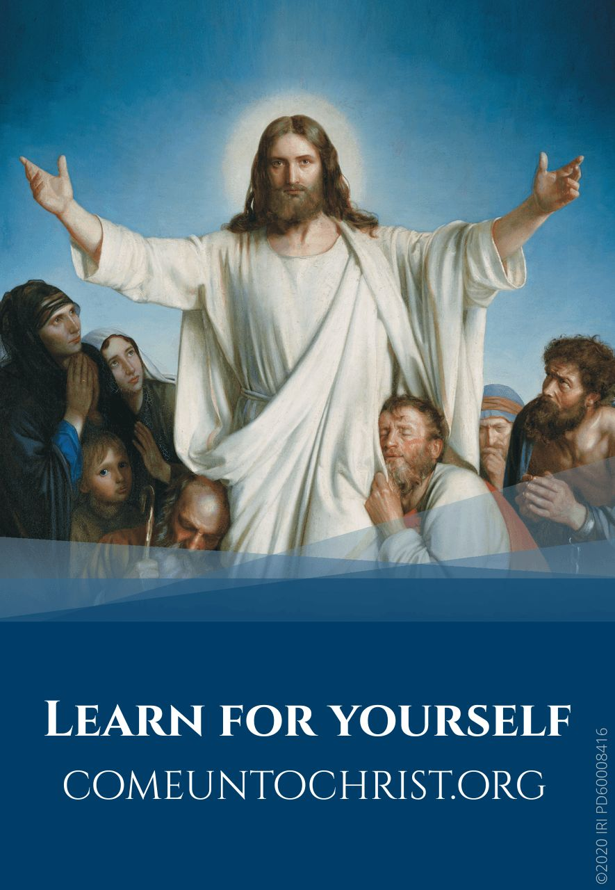

An Infinite Atonement
Grove Park 9th Ward Sacrament Meeting · July 27, 2025
Becoming a saint through the atonement of Christ.
Brothers and sisters, I unfortunately find myself without my normal books and notes available to me, as they’re currently still packed! So contrary to my normal way of preparing, I hope I can still provide a high level of academic treatments of doctrine in an inspired way.
I was raised in a home where anger was close at hand. Friends today would not describe me as an angry person, but I was an angry kid. That part of me has not entirely gone away. This past week I have been angry; angry at delays, at incompetence, and at bureaucracy. I’m generally pretty good at keeping those kinds of feelings well contained and pointed in a proper direction. Unfortunately recently that anger broke containment bled over, affecting my sleep and, worse, my family. Compounded with the assignment to speak, it forced me to reflect.
One scripture has been in my head for weeks, and I think you will understand why.
For the natural man is an enemy to God, and has been from the fall of Adam, and will be, forever and ever, unless he yields to the enticings of the Holy Spirit, and putteth off the natural man and becometh a saint through the atonement of Christ the Lord, and becometh as a child, submissive, meek, humble, patient, full of love, willing to submit to all things which the Lord seeth fit to inflict upon him, even as a child doth submit to his father.1
Becometh a saint through the atonement of Christ. That phrase in particular has lingered in my mind. What is the Atonement of Christ? We know that Jesus suffered in the garden and on the cross. Isaiah’s prophetic words give some explanation of what would come to pass:
Surely he hath borne our griefs, and carried our sorrows: yet we did esteem him stricken, smitten of God, and afflicted. But he was wounded for our transgressions, he was bruised for our iniquities: the chastisement of our peace was upon him; and with his stripes we are healed. All we like sheep have gone astray; we have turned every one to his own way; and the Lord hath laid on him the iniquity of us all. He was oppressed, and he was afflicted, yet he opened not his mouth: he is brought as a lamb to the slaughter, and as a sheep before her shearers is dumb, so he openeth not his mouth.2
Why? What does that suffering actually accomplish? And who wanted it? Everyone says His suffering and atonement are necessary. Our entire religion, our existence, our purpose, and our power are wrapped up in this Atonement. I want to know why. I want to know what it accomplishes. Further, I want to understand how I go about becoming a saint through the Atonement of Christ.
There Was No Other Way
We start in the garden. Mark records:
And he said, Abba, Father, all things are possible unto thee; take away this cup from me: nevertheless not what I will, but what thou wilt.3
All things are possible to God. If my own son asked me to take a bitter cup from him, every fatherly instinct in me would want to do it. Why didn’t the Father do something? We learn a little more from Alma the Younger. Recall that this is also prophecy; it is spoken before Christ comes in the flesh:
But there is a law given, and a punishment affixed, and a repentance granted; which repentance, mercy claimeth; otherwise, justice claimeth the creature and executeth the law, and the law inflicteth the punishment; if not so, the works of justice would be destroyed, and God would cease to be God.4
But God ceaseth not to be God, and mercy claimeth the penitent, and mercy cometh because of the atonement; and the atonement bringeth to pass the resurrection of the dead; and the resurrection of the dead bringeth back men into the presence of God; and thus they are restored into his presence, to be judged according to their works, according to the law and justice.5
Why didn’t the Father do something? Because He knew there wasn’t any other way. He is a God of law, a God of love, and a God of justice. Christ also knew. He knew there was no other way, even if all things are possible for God. To balk and back out then would have thrust all of creation back into chaos and close the means of exaltation for God’s children in this creation. So Christ submitted, as Matthew records: “thy will be done.”6 In this we have our first lesson on becoming a saint through the Atonement: we submit, even when we wish the cup could pass.
None Other Name
Coming back to the need for Jesus Christ, and why the Father, being a God of law, could not have saved us Himself: in Acts 4, Peter and John have been arrested and are being questioned by authorities in Jerusalem about a man they had miraculously healed, and by what power they were able to accomplish this. Peter, filled with the Holy Ghost, said to them:
Be it known unto you all, and to all the people of Israel, that by the name of Jesus Christ of Nazareth, whom ye crucified, whom God raised from the dead, even by him doth this man stand here before you whole.7
Neither is there salvation in any other: for there is none other name under heaven given among men, whereby we must be saved.8
According to Peter, speaking under the influence of a member of the Godhead, there is only one name given under heaven whereby we can be saved, and it is not Eloheim. Why? What prevents God the Father from accomplishing this task Himself? This is where it may get a little esoteric.
Law, Intelligence, and the Power of God
In 2 Nephi 2, Lehi knows he is going to pass away soon. He is sharing his testimony of gospel truths with his sons. Lots of good stuff in this chapter. Consider the following:
And if ye shall say there is no law, ye shall also say there is no sin. If ye shall say there is no sin, ye shall also say there is no righteousness. And if there be no righteousness there be no happiness. And if there be no righteousness nor happiness there be no punishment nor misery. And if these things are not there is no God. And if there is no God we are not, neither the earth; for there could have been no creation of things, neither to act nor to be acted upon; wherefore, all things must have vanished away.9
And now, my sons, I speak unto you these things for your profit and learning; for there is a God, and he hath created all things, both the heavens and the earth, and all things that in them are, both things to act and things to be acted upon.10
What are these things that “act”? In Doctrine and Covenants 93, Joseph receives revelation that teaches the following:
Man was also in the beginning with God. Intelligence, or the light of truth, was not created or made, neither indeed can be. All truth is independent in that sphere in which God has placed it, to act for itself, as all intelligence also; otherwise there is no existence.11
So intelligences are those things which act. What are intelligences? Abraham sheds light on this in chapter 3, where we learn of our own premortal existence with God:
And the Lord said unto me: These two facts do exist, that there are two spirits, one being more intelligent than the other; there shall be another more intelligent than they; I am the Lord thy God, I am more intelligent than they all.12
Now the Lord had shown unto me, Abraham, the intelligences that were organized before the world was; and among all these there were many of the noble and great ones; And God saw these souls that they were good, and he stood in the midst of them, and he said: These I will make my rulers; for he stood among those that were spirits, and he saw that they were good; and he said unto me: Abraham, thou art one of them; thou wast chosen before thou wast born.13
It is us. We are these intelligences. Why does that matter? Look a little further in Abraham, jumping to chapter 4:
And the Gods ordered, saying: Let the waters under the heaven be gathered together unto one place, and let the earth come up dry; and it was so as they ordered; And the Gods pronounced the dry land, Earth; and the gathering together of the waters, pronounced they, Great Waters; and the Gods saw that they were obeyed.14
And the Gods organized the earth to bring forth grass from its own seed. … And the Gods watched those things which they had ordered until they obeyed.15
How can a thing obey if it cannot act? How can it act if it does not have intelligence? Here we learn that not only are we intelligences, but everything has some form of intelligence. We have been taught that there are degrees of intelligence. A rock has intelligence, and I have intelligence, but the rock is more obedient than I. God commands the rock and it obeys. God commands me, and maybe I obey. And maybe I don’t. Here then we have also learned something incredibly important about the power of God. It is not magic.
Jesus said to the man at Bethesda, “Rise, take up thy bed, and walk.” And immediately the man was made whole.16 To the man sick of the palsy He said, “Arise, take up thy bed, and go unto thine house.” And he arose.17 He took the damsel by the hand and said, “Talitha cumi”—“Damsel, I say unto thee, arise.” And straightway she arose and walked.18 At the tomb He cried with a loud voice, “Lazarus, come forth.” And he that was dead came forth.19
This same power is available to us. Jacob taught:
Wherefore, we search the prophets, and we have many revelations and the spirit of prophecy; and having all these witnesses we obtain a hope, and our faith becometh unshaken, insomuch that we truly can command in the name of Jesus and the very trees obey us, or the mountains, or the waves of the sea.20
Power That Comes by Honor
I will share an account of a miraculous healing. Of note, this is the statement of witnesses hostile to the Prophet Joseph Smith and the work in which he was engaged. Those of you who have been paying attention in Sunday School will recognize some of these names.
Ezra Booth, of Mantua, a Methodist preacher, in company with his wife, Mr. and Mrs. Johnson, and some other citizens of this place, visited Smith at his house in Kirtland, in 1831. Mrs. Johnson had been afflicted for some time with a lame arm, and was not at the time of the visit able to lift her hand to her head. The party visited Smith, partly out of curiosity, and partly to see for themselves what there might be in the new doctrine. During the interview the conversation turned upon the subject of supernatural gifts; such as were conferred in the days of the apostles. Some one said: “Here is Mrs. Johnson with a lame arm; has God given any power to men on the earth to cure her?” A few moments later, when the conversation had turned in another direction, Smith rose, and walking across the room, taking Mrs. Johnson by the hand, said in the most solemn and impressive manner: “Woman, in the name of Jesus Christ, I command thee to be whole;” and immediately left the room. The company were awestricken at the infinite presumption of the man, and the calm assurance with which he spoke. Mrs. Johnson at once lifted her arm with ease, and on her return home the next day she was able to do her washing without difficulty or pain.21
So how do we partake in this power? How can it be manifested by us? The Lord said to Nephi, the son of Helaman:
Blessed art thou, Nephi, for those things which thou hast done; for I have beheld how thou hast with unwearyingness declared the word, which I have given unto thee, unto this people. And thou hast not feared them, and hast not sought thine own life, but hast sought my will, and to keep my commandments.22
And now, because thou hast done this with such unwearyingness, behold, I will bless thee forever; and I will make thee mighty in word and in deed, in faith and in works; yea, even that all things shall be done unto thee according to thy word, for thou shalt not ask that which is contrary to my will.23
Behold, I give unto you power, that whatsoever ye shall seal on earth shall be sealed in heaven; and whatsoever ye shall loose on earth shall be loosed in heaven; and thus shall ye have power among this people.24
We are being taught here the basic principles of the power of the priesthood and of faith: seek to keep His commandments, and do not ask contrary to His will.
How does that work? Why would these intelligences obey us—or God—if we do those things?
We go back to the premortal council. Doctrine and Covenants 29 teaches that the devil rebelled, saying, “Give me thine honor, which is my power”; and a third part of the hosts of heaven turned away because of their agency.25
Remember earlier we spoke of passages that say God would cease to be God. That is an extraordinary doctrine. To imply that it was possible for God to cease to be God is considered heretical in some faiths. Yet our scriptures teach that God is bound by law, or He could cease to be God. How could He lose His power? By not being honored any more. Where does that honor come from? From the same place we achieve it: keeping the law.
That adds meaning to Doctrine and Covenants 82:
Or, in other words, I give unto you directions how you may act before me, that it may turn to you for your salvation. I, the Lord, am bound when ye do what I say; but when ye do not what I say, ye have no promise.26
Consider that all things are obedient to God. Remember me versus the rock. If He commands, all things obey, the rock obeys. Except us. How is it that we cannot be compelled, even by the great goodness and honor of God, to obey? The answer is agency, granted to us by virtue of being the offspring of that same Deity. Consider the power you wield when you disobey God, and the message you send in so doing.
One of my favorite scriptures is in Doctrine and Covenants 122. The Lord asks Joseph, after listing griefs, pains, and afflictions that could be heaped upon him:
The Son of Man hath descended below them all. Art thou greater than he?27
Consider the power of a king. His power comes from the obedience of his subjects. If everyone simply stopped doing what the king wanted, the crown would sit on an empty chair. It takes more than a crown to make a king. Authority may be conferred from above as in the case of our bishop, ordained by revelation and power from on high. But honor, the living power that makes that authority effective, comes from those who choose to follow, in this instance those of us in this congregation. God will not compel us. He honors our agency because He is a God of law.
Why Jesus Had to Suffer
Let’s circle back and answer some questions. In the interest of time I will lean on truths we already know.
Why couldn’t it be the Father? Why wasn’t there another way? Because this is what we agreed to in the premortal realm. “There is a law, irrevocably decreed in heaven before the foundations of this world.”28 In all ways we have our agency. We agreed with this plan. Why did Jesus have to suffer? Amulek taught:
For it is expedient that an atonement should be made; for according to the great plan of the Eternal God there must be an atonement made, or else all mankind must unavoidably perish; yea, all are hardened; yea, all are fallen and are lost, and must perish except it be through the atonement which it is expedient should be made.29
For it is expedient that there should be a great and last sacrifice; yea, not a sacrifice of man, neither of beast, neither of any manner of fowl; for it shall not be a human sacrifice; but it must be an infinite and eternal sacrifice.30
Jacob taught the same necessity:
Wherefore, it must needs be an infinite atonement—save it should be an infinite atonement this corruption could not put on incorruption. Wherefore, the first judgment which came upon man must needs have remained to an endless duration. And if so, this flesh must have laid down to rot and to crumble to its mother earth, to rise no more.31
O the wisdom of God, his mercy and grace! For behold, if the flesh should rise no more our spirits must become subject to that angel who fell from before the presence of the Eternal God, and became the devil, to rise no more. And our spirits must have become like unto him, and we become devils, angels to a devil, to be shut out from the presence of our God, and to remain with the father of lies, in misery, like unto himself.32
O how great the goodness of our God, who prepareth a way for our escape from the grasp of this awful monster; yea, that monster, death and hell, which I call the death of the body, and also the death of the spirit.33
Amulek continues:
Now there is not any man that can sacrifice his own blood which will atone for the sins of another. Now, if a man murdereth, behold will our law, which is just, take the life of his brother? I say unto you, Nay. But the law requireth the life of him who hath murdered; therefore there can be nothing which is short of an infinite atonement which will suffice for the sins of the world.34
And who wanted that? We did, exercising our agency. All these organized intelligences, in council with the Father and the Son before this world was created, knew it could not be us. We are sinners. It had to be someone who was infinitely loved, who was sinless, to pay the price for those of us who had sinned. There is no possibility of exaltation for a sinner on his own terms. If God breaks the law, He ceases to be God. We have broken the law and cannot attain exaltation.
Therefore, it is expedient that there should be a great and last sacrifice. … And behold, this is the whole meaning of the law, every whit pointing to that great and last sacrifice; and that great and last sacrifice will be the Son of God, yea, infinite and eternal.35
And thus he shall bring salvation to all those who shall believe on his name; this being the intent of this last sacrifice, to bring about the bowels of mercy, which overpowereth justice, and bringeth about means unto men that they may have faith unto repentance. And thus mercy can satisfy the demands of justice, and encircles them in the arms of safety, while he that exercises no faith unto repentance is exposed to the whole law of the demands of justice; therefore only unto him that has faith unto repentance is brought about the great and eternal plan of redemption.36
And here we see that the law and the Atonement are not merely a quid pro quo of crime and punishment. They become a judgment based on mercy and love.
It Is Finished
Through the expiative suffering of Christ in Gethsemane and upon the cross, His Father’s Spirit was with Him, sustaining Jesus as it sustains all of us. Jesus’ awful work was fully accomplished and made supreme with one final act from the Father.
Eli, Eli, lama sabachthani? that is to say, My God, my God, why hast thou forsaken me?37
When the Spirit came back, Jesus said, “It is finished.” And He gave up His life.38 In that moment, Jesus completed His Earthly mission and truly became the Christ, the Anointed One, for all of us.
Now We Have to Do Ours
King Benjamin’s words return:
For the natural man is an enemy to God, and has been from the fall of Adam, and will be, forever and ever, unless he yields to the enticings of the Holy Spirit, and putteth off the natural man and becometh a saint through the atonement of Christ the Lord, and becometh as a child, submissive, meek, humble, patient, full of love, willing to submit to all things which the Lord seeth fit to inflict upon him, even as a child doth submit to his father.1
God and His Son have done Their part. Now we have to do ours.
Therefore I command you to repent—repent, lest I smite you by the rod of my mouth, and by my wrath, and by my anger, and your sufferings be sore—how sore you know not, how exquisite you know not, yea, how hard to bear you know not.39
For behold, I, God, have suffered these things for all, that they might not suffer if they would repent; But if they would not repent they must suffer even as I; Which suffering caused myself, even God, the greatest of all, to tremble because of pain, and to bleed at every pore, and to suffer both body and spirit—and would that I might not drink the bitter cup, and shrink—Nevertheless, glory be to the Father, and I partook and finished my preparations unto the children of men.40
For me, that is not only doctrine. It is a rebuke and a comfort. The natural man in me this week, the impatience and anger that spilled onto people I love, does not get put off by willpower alone. It is put off as I yield to the enticings of the Holy Spirit and come to Christ. Submissive, meek, humble, patient, full of love, and willing to submit, even as a child submits to his father.
The divinity of Jesus Christ is our message. All other things are appendages and incidental to that message.
I know that He lives. I know that His Atonement is infinite; infinite in suffering, infinite in reach, infinite in its power to change a natural man into a saint. I know that the Father did not take the cup away because He loved us enough to keep the law that makes exaltation possible, and that the Son loved us enough to drink it. I pray we will repent, yield, and become. In the name of Jesus Christ, amen.
Notes
- Mosiah 3:19.
- Isaiah 53:4–7.
- Mark 14:36.
- Alma 42:22.
- Alma 42:23.
- Matthew 26:42.
- Acts 4:10.
- Acts 4:12.
- 2 Nephi 2:13.
- 2 Nephi 2:14.
- Doctrine and Covenants 93:29–30.
- Abraham 3:19.
- Abraham 3:22–23.
- Abraham 4:9–10.
- Abraham 4:12, 18.
- John 5:8–9.
- Matthew 9:6–7.
- Mark 5:41–42.
- John 11:43–44.
- Jacob 4:6.
- Amos S. Hayden, Early History of the Disciples in the Western Reserve (Cincinnati: Chase and Hall, 1875), 250–51.
- Helaman 10:4.
- Helaman 10:5.
- Helaman 10:7.
- Doctrine and Covenants 29:36.
- Doctrine and Covenants 82:9–10.
- Doctrine and Covenants 122:8.
- Doctrine and Covenants 130:20.
- Alma 34:9.
- Alma 34:10.
- 2 Nephi 9:7.
- 2 Nephi 9:8–9.
- 2 Nephi 9:10.
- Alma 34:11–12.
- Alma 34:13–14.
- Alma 34:15–16.
- Matthew 27:46.
- John 19:30.
- Doctrine and Covenants 19:15.
- Doctrine and Covenants 19:16–19.

← Back to talks